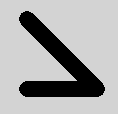

ShapePath QML Type
Describes a Path and associated properties for stroking and filling. More...
| Import Statement: | import QtQuick.Shapes 1.7 |
| Inherits: |
Properties
- capStyle : enumeration
- dashOffset : real
- dashPattern : list<real>
- fillColor : color
- fillGradient : ShapeGradient
- fillRule : enumeration
- joinStyle : enumeration
- miterLimit : int
- pathHints : PathHints
(since 6.7) - strokeColor : color
- strokeStyle : enumeration
- strokeWidth : real
Detailed Description
A Shape contains one or more ShapePath elements. At least one ShapePath is necessary in order to have a Shape output anything visible. A ShapePath itself is a Path with additional properties describing the stroking and filling parameters, such as the stroke width and color, the fill color or gradient, join and cap styles, and so on. As with ordinary Path objects, ShapePath also contains a list of path elements like PathMove, PathLine, PathCubic, PathQuad, PathArc, together with a starting position.
Any property changes in these data sets will be bubble up and change the output of the Shape. This means that it is simple and easy to change, or even animate, the starting and ending position, control points, or any stroke or fill parameters using the usual QML bindings and animation types like NumberAnimation.
In the following example the line join style changes automatically based on the value of joinStyleIndex:
ShapePath { strokeColor: "black" strokeWidth: 16 fillColor: "transparent" capStyle: ShapePath.RoundCap property int joinStyleIndex: 0 property variant styles: [ ShapePath.BevelJoin, ShapePath.MiterJoin, ShapePath.RoundJoin ] joinStyle: styles[joinStyleIndex] startX: 30 startY: 30 PathLine { x: 100; y: 100 } PathLine { x: 30; y: 100 } }
Once associated with a Shape, here is the output with a joinStyleIndex of 2 (ShapePath.RoundJoin):

See also Qt Quick Examples - Shapes, Weather Forecast Example, and Shape.
Property Documentation
capStyle : enumeration |
This property defines how the end points of lines are drawn. The default value is ShapePath.SquareCap.
| Constant | Description |
|---|---|
ShapePath.FlatCap | A square line end that does not cover the end point of the line. |
ShapePath.SquareCap | A square line end that covers the end point and extends beyond it by half the line width. |
ShapePath.RoundCap | A rounded line end. |
dashOffset : real |
This property defines the starting point on the dash pattern, measured in units used to specify the dash pattern.
The default value is 0.
See also QPen::setDashOffset().
This property defines the dash pattern when ShapePath.strokeStyle is set to ShapePath.DashLine. The pattern must be specified as an even number of positive entries where the entries 1, 3, 5... are the dashes and 2, 4, 6... are the spaces. The pattern is specified in units of the pen's width.
The default value is (4, 2), meaning a dash of 4 * ShapePath.strokeWidth pixels followed by a space of 2 * ShapePath.strokeWidth pixels.
See also QPen::setDashPattern().
fillColor : color |
This property holds the fill color.
When set to transparent, no filling occurs.
The default value is white.
fillGradient : ShapeGradient |
This property defines the fill gradient. By default no gradient is enabled and the value is null. In this case the fill uses a solid color based on the value of ShapePath.fillColor.
When set, ShapePath.fillColor is ignored and filling is done using one of the ShapeGradient subtypes.
Note: The Gradient type cannot be used here. Rather, prefer using one of the advanced subtypes, like LinearGradient.
fillRule : enumeration |
This property holds the fill rule. The default value is ShapePath.OddEvenFill. For an explanation on fill rules, see QPainterPath::setFillRule().
| Constant | Description |
|---|---|
ShapePath.OddEvenFill | Odd-even fill rule. |
ShapePath.WindingFill | Non-zero winding fill rule. |
joinStyle : enumeration |
This property defines how joins between two connected lines are drawn. The default value is ShapePath.BevelJoin.
| Constant | Description |
|---|---|
ShapePath.MiterJoin | The outer edges of the lines are extended to meet at an angle, and this area is filled. |
ShapePath.BevelJoin | The triangular notch between the two lines is filled. |
ShapePath.RoundJoin | A circular arc between the two lines is filled. |
miterLimit : int |
When joinStyle is set to ShapePath.MiterJoin, this property specifies how far the miter join can extend from the join point.
The default value is 2.
pathHints : PathHints |
This property describes characteristics of the shape. If set, these hints may allow optimized rendering. By default, no hints are set. It can be a combination of the following values:
| Constant | Description |
|---|---|
ShapePath.PathLinear | The path only has straight lines, no curves. |
ShapePath.PathQuadratic | The path does not have any cubic curves: only lines and quadratic Bezier curves. |
ShapePath.PathConvex | The path does not have any dents or holes. All straight lines between two points inside the shape will be completely inside the shape. |
ShapePath.PathFillOnRight | The path follows the TrueType convention where outlines around solid fill have their control points ordered clockwise, and outlines around holes in the shape have their control points ordered counter-clockwise. |
ShapePath.PathSolid | The path has no holes, or mathematically speaking it is simply connected. |
ShapePath.PathNonIntersecting | The path outline does not cross itself. |
ShapePath.PathNonOverlappingControlPointTriangles | The triangles defined by the curve control points do not overlap with each other, or with any of the line segments. Also, no line segments intersect. This implies PathNonIntersecting. |
Not all hints are logically independent, but the dependencies are not enforced. For example, PathIsLinear implies PathIsQuadratic, but it is valid to have PathIsLinear without PathIsQuadratic.
The pathHints property describes a set of statements known to be true; the absence of a hint does not necessarily mean that the corresponding statement is false.
This property was introduced in Qt 6.7.
strokeColor : color |
This property holds the stroking color.
When set to transparent, no stroking occurs.
The default value is white.
strokeStyle : enumeration |
This property defines the style of stroking. The default value is ShapePath.SolidLine.
| Constant | Description |
|---|---|
ShapePath.SolidLine | A plain line. |
ShapePath.DashLine | Dashes separated by a few pixels. |
strokeWidth : real |
This property holds the stroke width.
When set to a negative value, no stroking occurs.
The default value is 1.